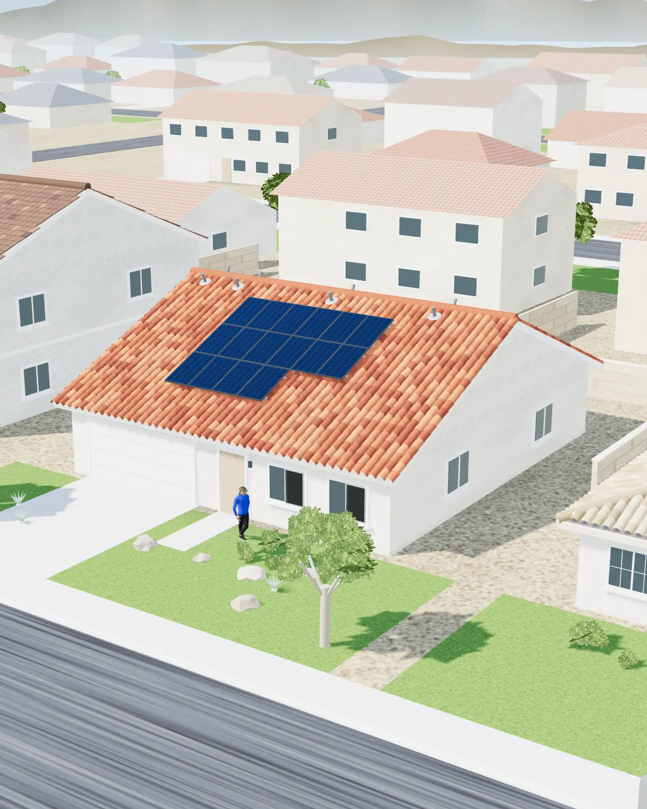
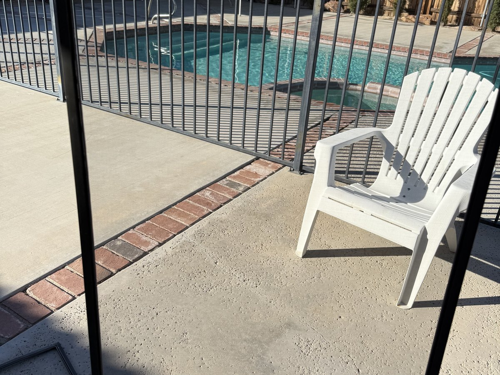
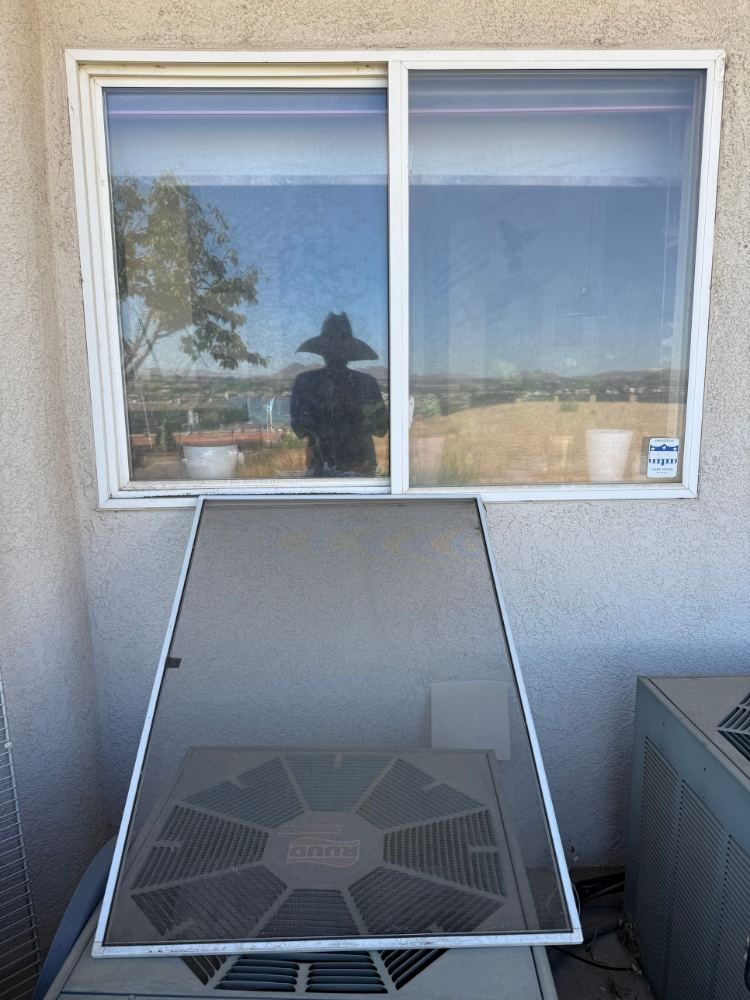
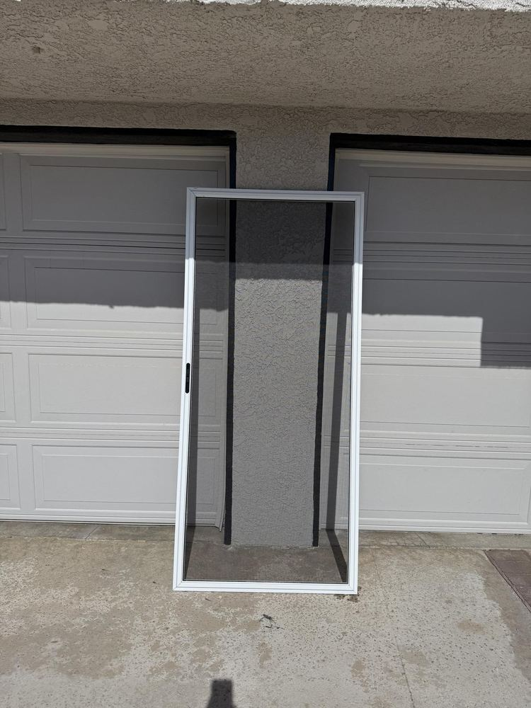
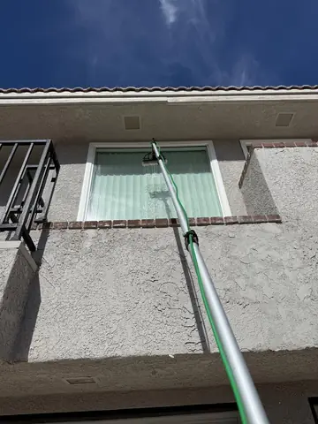
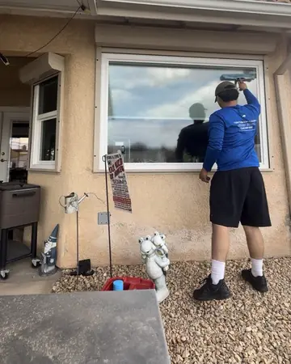
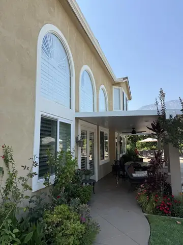
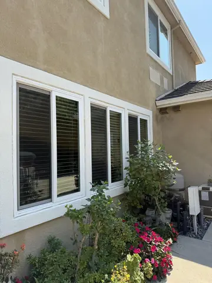

Inicio/Limpieza de ventanas
Hesperia y todo el High DesertLimpieza de ventanas con agua purificada
$149 un piso, $249 dos pisos, por fuera, con mosquiteros, rieles y repisas incluidos. Por dentro, todas las ventanas de la casa por $49 más.
Aquí arriba las ventanas no se ensucian igual que en la ciudad. El polvo del desierto llega con cada viento y los aspersores dejan minerales que se hornean en el vidrio con el sol. Una limpieza con agua purificada quita las dos cosas y deja el vidrio claro más tiempo, porque no queda nada que atraiga el polvo.
★★★★★ 5.0 en Google · Inspección gratis · Satisfacción garantizada






Una casa modelo terminada como dejamos la tuya. Tócala para probar con la tuya.
¿Quieres ver trabajos de limpieza de ventanas que hemos hecho?
Fotos de nuestros propios trabajos. Toca una para verla más grande.
 Hesperia · Ventana octagonal
Hesperia · Ventana octagonal Spring Valley Lake · Vidrio de arriba desde la escalera
Spring Valley Lake · Vidrio de arriba desde la escalera
Apple Valley · Segundo piso con pértiga de agua
Hesperia · Tony con el jalador
Ventanas altas en arco
Fila de ventanas del frente


¿Te gusta lo que ves? Arma tu proyecto aquí abajo.
Toca lo que necesitas
Elige uno o varios. Son precios reales, y Tony los confirma por escrito antes de empezar.
Limpieza de ventanas $149 / $249
El precio base cubre de 10 a 12 ventanas en un piso o de 18 a 20 en dos pisos. Pasando de ahí hay más vidrio, más mosquiteros y más rieles que hacer bien, así que son $39 fijos más, en uno o dos pisos.
Un solo pago de $49 por todas las ventanas de adentro, con los rieles aspirados y secados. La mayoría cobra por ventana el trabajo interior. Nosotros ya estamos ahí con el agua y las herramientas, así que el interior te cuesta mucho menos que una visita aparte.
Las casas grandes varían mucho. Los vidrios y mosquiteros extra se cuentan en el lugar o por satélite, y por dentro y por fuera puede salir en $499 a $599 en algunas casas. Tony te da el precio exacto antes de empezar, sin sorpresas ese día.
Lo que recibes. Más luz en cada cuarto, una vista clara, mosquiteros y rieles que corren como deben, y vidrio que dura porque el agua dura nunca alcanza a marcarlo.
Por qué ahora. El polvo y el rocío de los aspersores se acumulan rápido aquí arriba. Una limpieza cada 3 a 6 meses evita que el agua dura se fije en el vidrio.
Control de palomas $450+
Las cuadrillas baratas atornillan la malla al marco del panel o al techo. Cada hoyo es una entrada de agua y un motivo para que la compañía solar niegue la garantía. Nuestros clips se agarran del borde interior del marco, aguantan el viento del High Desert y se quitan limpio si un panel necesita servicio.
$450 cubre hasta 12 paneles. Cada panel de más es más malla, más clips, más limpieza debajo del arreglo y un panel más que lavar, por eso son $50 por panel. Pon tu cantidad en la casilla de paneles de abajo.
2 a 3 vienen gratis. El destello de uno cubre el lado del techo al que mira, y la cumbrera lo bloquea, así que los techos grandes o con palomas de los dos lados suelen necesitar uno más. Toca "Mira lo que hacen los espantapájaros" para verlo en 3D.
Lo que recibes. Las palomas fuera de debajo de los paneles, nidos y excremento retirados y el área desinfectada para que el olor también se vaya, paneles y el techo alrededor limpios, malla sujeta al marco sin anular la garantía de tus paneles, y garantía de por vida en la mano de obra de la instalación, por escrito.
Por qué ahora. Los nidos solo crecen. Mientras más tiempo se queden las palomas, más hay que limpiar, y más excremento queda en el techo y el cableado.
Limpieza de paneles solares $7 por panel
Lo que recibes. Paneles que producen lo que deben, y una revisión de todo el arreglo por daños, cables sueltos y aves mientras estamos arriba. $7 por panel, secan sin manchas.
Por qué ahora. Aquí casi no llueve para enjuagar los paneles, así que el polvo se acumula y tu producción baja un poco más cada mes.
Mosquiteros por mosquitero
La misma clase de malla que usó el constructor, instalada y tensada bien. La vista más clara y buen paso de aire. Bien para ventanas con sombra.
Poliéster recubierto de vinil, resistente al sol y al clima, hecho para estar afuera. Aguanta el sol del desierto, el viento y las mascotas mejor que la fibra de vidrio común.
Cuando un marco está doblado, flojo o sin esquinas, la malla nueva no queda firme. Rehacemos el marco a la medida de tu ventana con esquinas y clips nuevos, para que el mosquitero entre y se quede. $10 por mosquitero, con cualquier malla.
Lo que recibes. Aire adentro y bichos afuera, una vista más clara desde adentro, mosquiteros que entran y salen fácil, y 2 años de garantía en la malla.
Por qué ahora. El sol fuerte dura como nueve meses al año aquí. La malla del constructor se pone quebradiza y el viento la termina.
Manchas de agua dura desde $12 por vidrio
El agua dura son minerales pegados al vidrio, así que cada vidrio se trata y se pule a mano, uno por uno. Probamos un vidrio gratis primero para que veas el resultado antes de decidir el resto.
Lavado suave de techo desde $599
Limpieza de obra nueva desde $249
Limpieza de canaletas se cotiza en el lugar
Lavado a presión se cotiza en el lugar
Limpieza de botes de basura se cotiza en el lugar
Quitar calcomanías y vinil desde $129
Quitar grafiti desde $129
Locales y edificios $149 por dentro y por fuera
Cuando cambian tus promociones, quitamos la calcomanía vieja limpio y ponemos la nueva derecha mientras estamos ahí, $10 por calcomanía. Tú pones las calcomanías, nosotros el vidrio.
Los trabajos especiales son un precio inicial. Tony lo confirma por escrito antes de empezar.
- Inspección gratis
- Sin cargo por viaje
- Tarjeta, efectivo o cheque
Elige un día
Reserva en líneaReserva en nuestro sitio y ahorra un 10% extra. Elige tu día abajo.
Tony confirma por mensaje de texto, y si tu día se llena te ofrece el más cercano.
El polvo del desierto y el agua dura vuelven, igual que crece el pasto. Con un plan, Tony te manda un mensaje antes de cada visita, para que no tengas que acordarte.
El PDF trae por escrito los términos y garantías de tu cotización, para que los leas antes de reservar. El PDF va en inglés.
Tu precio ya está fijo. Está aquí arriba, y no cambia el día del trabajo.
Tony confirma por mensaje. Trae todo, se acomoda a tu día, y tú no mueves un dedo.
No pagas nada ahora. Tarjeta, efectivo o cheque cuando el trabajo esté hecho y lo hayas revisado.
Envíala como prefieras
No pagas nada ahora. Pon tus datos una vez y luego manda un texto, un correo o el formulario. Todo lo que Tony necesita ya está escrito. El mensaje va en inglés para que Tony lo lea rápido; puedes escribirle en español y él te contesta.
Cómo saber que ya toca
- Ventanas. Manchas cuando el sol pega en el vidrio, mosquiteros que se ven grises, o más de 6 meses desde la última limpieza.
- Paneles solares. Sin lavado en los últimos 6 meses, o un día soleado en tu app solar que marca menos que antes.
- Palomas. Aves en el techo, excremento en la teja o la cochera, arrullos debajo de los paneles, o un olor fuerte a amoniaco con el calor. No se van solas.
- Mosquiteros. Rasgaduras, hoyos, malla que se abomba del marco o se deshace al tocarla.
¿Llegan hasta mi casa?
Escribe tu código postal. Lo sabes en un segundo.
Velo en tu casa en 3D
Elige tu casa. Mira cómo se hace el trabajo.
¿Casa antigua, prefabricada o grande? Elige el estilo más parecido y mira el trabajo en una casa como la tuya.
Qué tiene de diferente nuestra limpieza de ventanas
- Los mosquiteros se quitan y se tallan, y luego vuelven a su lugar.
- Rieles y repisas limpios. Incluidos en el precio, no son extras.
- Acabado con agua purificada, para que el vidrio seque claro y sin residuo.
- Por dentro, todas las ventanas por $49. La mayoría limpia por fuera y deja un charco de lodo en el riel. Nosotros aspiramos y secamos cada riel.
Lo que trae cada limpieza
Mosquiteros
Se quitan, se tallan y se enjuagan, y vuelven a su lugar. Un mosquitero gris tapa más luz de lo que parece, y la tierra se regresa al vidrio si no se limpia.
Rieles y repisas
Los rieles se limpian y las repisas se secan. Casi todas las cuadrillas limpian por fuera y dejan el agua sucia en el riel. Nosotros no.
Agua purificada
Agua sin minerales, así que el vidrio seca claro y sin manchas. Los segundos pisos se limpian desde el suelo con una pértiga, sin escaleras recargadas en tu estuco.
Las ventanas de adentro, por $49
Por dentro, todas las ventanas de la casa por $49 en la misma visita, no un precio por ventana. Incluye el vidrio de adentro, los marcos y los rieles aspirados y secados, que es lo que hace que las ventanas vuelvan a correr como cuando la casa era nueva. Zapatos cubiertos, telas debajo de cada ventana, y los muebles se mueven y se regresan.
Las manchas blancas que no salen
Si tienes una banda blanca o manchas redondas en los vidrios que dan al pasto, eso es agua dura de los aspersores, minerales pegados al vidrio. No sale con una limpieza normal. Se trata vidrio por vidrio, desde $12 cada uno, y probamos un vidrio gratis primero para que veas el resultado antes de pagar el resto. También te decimos qué aspersor está mojando el vidrio, para que no regrese.
Cuánto cuesta
$149 un piso, $249 dos pisos, por fuera, con mosquiteros, rieles y repisas. Más de 12 ventanas en un piso o 20 en dos pisos son $39 fijos más. Por dentro, toda la casa, $49. Casas grandes o de lago se cotizan después de verlas, normalmente $499 a $599 por dentro y por fuera, confirmado por escrito.
Si reservas en nuestro sitio, la primera visita tiene 10% de descuento. Con un plan de dos veces al año, cada visita después de la primera tiene 15% de descuento; cada 3 meses, 25%. Tony te manda un mensaje antes de cada visita y puedes moverla o saltarla.
Preguntas sobre ventanas
¿Cuánto cuesta limpiar las ventanas?
$149 por fuera en una casa de un piso y $249 en dos pisos, con mosquiteros, rieles y repisas incluidos. Por dentro, todas las ventanas por $49 más en la misma visita.
¿Usan escaleras en las casas de dos pisos?
Casi nunca. Las ventanas de arriba se limpian desde el suelo con una pértiga y agua purificada, sin escaleras recargadas en el estuco y sin nada que manche.
¿Limpian los mosquiteros?
Sí, se quitan, se tallan, se enjuagan y vuelven a su lugar. Va incluido en el precio, igual que los rieles y las repisas.
¿Salen las manchas de los aspersores?
Las manchas de agua dura necesitan un tratamiento aparte, desde $12 por vidrio, solo en los vidrios que lo necesitan. Probamos uno gratis primero para que veas el resultado.
¿Cada cuánto conviene limpiarlas?
Dos veces al año en la mayoría de las colonias, y cada 3 meses en casas junto al desierto abierto, caminos de tierra o aspersores. Con un plan, esas visitas tienen 15% o 25% de descuento después de la primera.